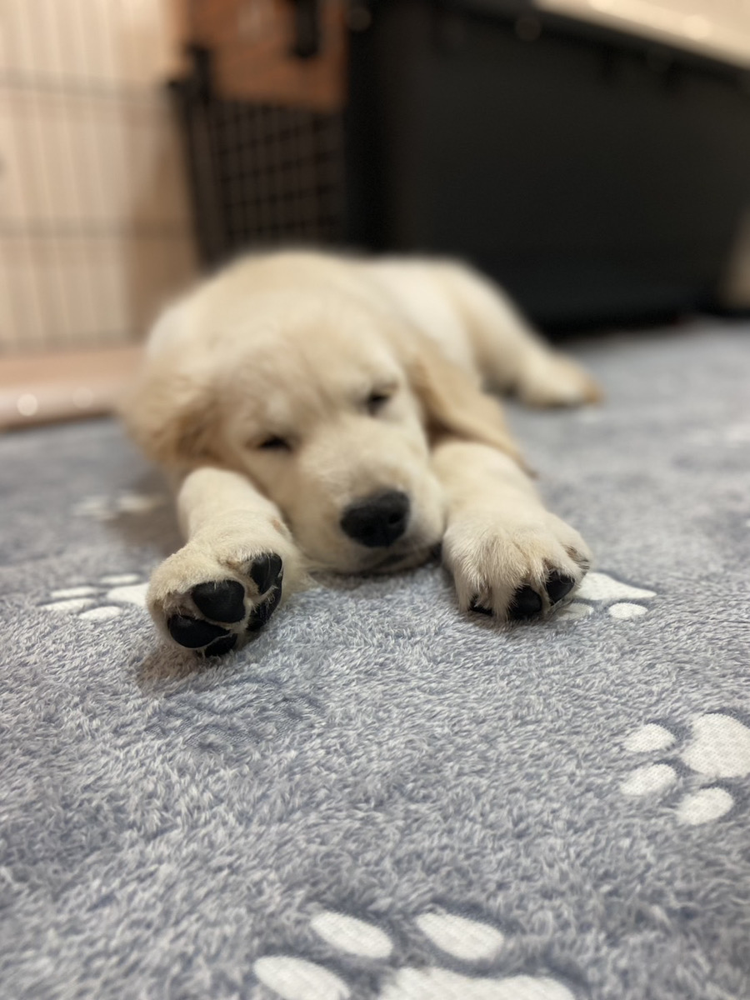

可愛いペットの動画を大募集中！

友だち追加して動画を送る「うちわん&うちにゃん」は、ペットの魅力を発信するための個人運営によるコンテンツ制作プロジェクトです。LINE公式アカウントを通じていただいた動画は、当プロジェクトのSNSコンテンツ内で紹介・編集されることを目的としています。
動画提供に関する同意事項：
・動画はご自身で撮影されたものに限ります。
・ご提供いただいた動画は、各種SNS媒体にて公開される場合があります。
・運営に関するお問い合わせは、LINE公式アカウント内のメッセージ機能にて承っております。